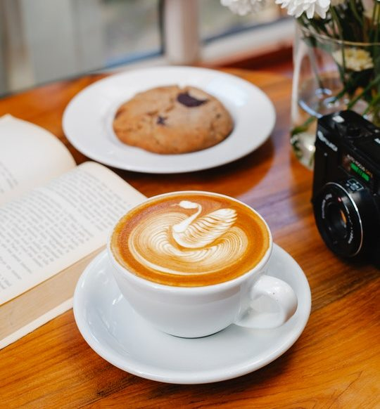
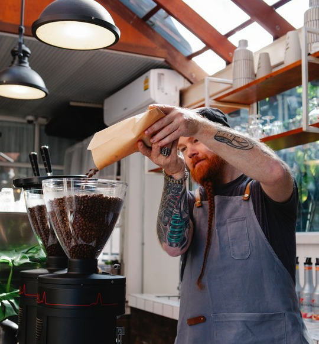

CAFFICO
Kao naš novi brend rađa se 2012. godine sa tri različita ukusa: Classic, Strong, Supremo. Tokom godina Caffico proizvodi su postajali sve popularniji i svojim kvalitetom se probili na tržištu.
Mi vodimo računa o kvalitetu. Bitno nam je svako zrno. Želimo da naši kupci budu zadovoljni. Caffico je tu da sve Vaše trenutke upotpuni i učini lepšim. Naša kafa prolazi dugaček put. Od plantaža u najudaljenijim krajevima sveta, preko ruku farmera i berača plodova, do prženja i najfinijeg mlevenja u našim mlinovima.

KVALITET
Zbog strasti prema inovacijama kompanija je proširila svoj portfelj i postala priča o uspehu s više brendova, uvek podržana nepokolebljivim naglaskom na kvalitetu te rađanjem novog modernog brenda Caffico. Uz ponudu visoko kvalitetne tradicionalne kafe, espresso kafe asortiman se proširio na paletu specijalitetnih kafa, instant kafe, 2u1, 3u1 i aparata za kafu. Vlasnička franšiza prodavnica kafe kompanije Mileks prisutna je na 10 lokacija u Beogradu i više od 20 u celoj regiji, dok je nedavno pokretanje butika kafe Caffico u Beogradu donelo Srbiji najkvalitetnije kafeno iskustvo.